Prototypes
1. Inheritance
Inheritance is one of the core concepts of object-oriented programming that enables an object to take on the properties and methods of another object. And this makes it easy to reuse code in different parts of an application.
Here is an example.
So we have this circle class with one method, computeOptimumLocation.
Let's imagine tomorrow we're going to add another class to our application called square.
And square also needs this method, computeOptimumLocation.
For now let's imagine the implementation of this object is exactly the same
across these two different classes, you don't want to repeat this implementation.
Because if there is a bug in this application, you have to fix it
in multiple places. Or if we decide to change the implementation
better, again, you have to repeat this in different places.

So that's when inheritance comes to the rescue.
We can define a new class called Shape, put this method there, and
have circle and square inherit this method, of the shape of the class.

Now in inheritance, we have a few terms that you should be familiar with,
because I'm going to use these terms throughout this course. In this diagram,
we refer to the shape class as the base class, or super class, or parent class.
All these terms are exactly the same. Different tutorials and different books use
different terms. In contrast, we refer to the circle as the direct class
or sub class, or child class, and finally, we refer to the inheritance relationship
as IS-A relationship. So, we say circle IS-A shape.
Now this is the classical definition of inheritance.
2. Prototypes and Prototypical Inheritance
Well, here we have a circle object. We can define another object let's call it shape, and add all the common behavior, or all the common methods in this object, like computeOptimumLocation. And then somehow we can link a circle object to the shape object. Now we refer to the shape object as the prototype of the circle. So a prototype is essentially a parent of another object.
Whenever you hear the word prototype, just think parent. So every object in JavaScript, except only a single object (i.e. root object), has a prototype for parent. And it inherits all the members we find in it's prototype.
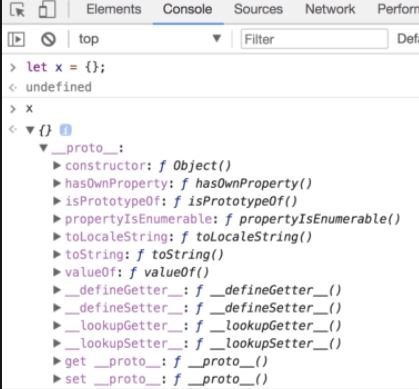
I'm going to define a new object, just an empty object. Now let's
inspect this. So, look here we have a property called proto. Note that this property
is faded, because it's deprecated, and you shouldn't directly access it.
It's only available here to help you troubleshoot problems. So let's
expand this, alright look, this is the prototype, or parent, for this x object that
we created here. We have these properties and methods, like constructor, you saw that in the last
section. So every object has a constructor property which references the function that was used to construct or create
that object. We also have that object here toString so, let's use that method, you can type x.toString.
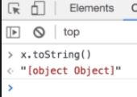
So every object that we create in JavaScript directly or indirectly inherits from prototype of its parent object and this parent object doesn't have a prototype or parent object.
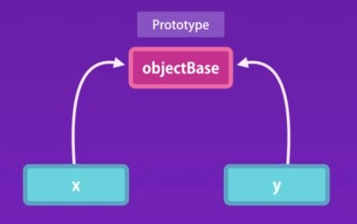
We have x and y, and both these objects reference object base.
So we have a single instance of objectBase in memory.
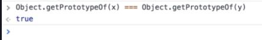
Both, x and y have the exact same prototype.
So now that you understand what a prototype is, let's define prototypical inheritance.
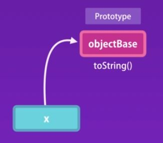
Earlier, we accessed the toString (i.e.: x.toString()) method, on the x object, we didn't define
method in our x object, because x was an empty object, right?
So how does this work, how can we access this method? Well, when we access a property or a method on an object,
JavaScript engine first looks for that property or method first on the object itself (i.e. x object ).
If it can't find it, then it looks at the prototype for that object.
Again, if it can find that member, it will look at the prototype of that object
all the way up to the root object which we call objectBase. So this is prototypical inheritance in action.
So, once again, I want to emphasize that a prototype is just a regular object in memory.
There is nothing special about it. Every object has a prototype or a parent, except the root object.
3. Multi-level Inheritance
Let's define an empty array, let's call this myArray. Now, let's inspect this.
Alright, so, here we have a prototype property, let's look at the prototype or the parent
for this array. Okay, look, in this object we have these methods.
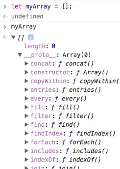
So this is what we have in memory, we have myArray. Which derives from, let's call this array base.
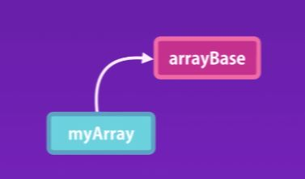
Now, let's inspect the prototype of the array based object. So, back here, when you scroll down, look here you have
another proto property, let's expand this, what do you see here?
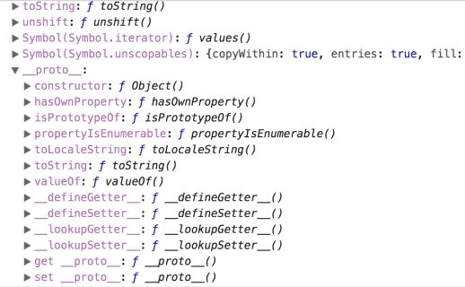
That looks familiar right? This is our object base. Or the root object in JavaScript, so here's the
visualization of what we have in memory.
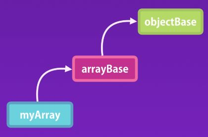
This is what we call multilevel inheritance.
What about the objects you create using the custom constructors?
function Circle(radius) {
this.radius = radius;
this.draw = function() {
console.log('draw');
}
}
const circle = new Circle(10);
So here we have the constructor Circle, and we have created the circle object using this constructor.
So let's inspect this on the console.
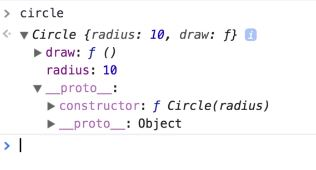
So, circle, here's our circle object, it has a prototype look, this prototype is the prototype
for all circle objects that we create using our circle constructor. Let's call this circle base.
So every time we call the circle constructor to create a new circle object, this constructor will create
a new object and set it's prototype property to circle base.
In other words, objects created by a given constructor will have the same prototype.
So all circle objects created by the circle constructor will have the same prototype, and similarly, all arrays created by the
array constructor will have the same prototype.
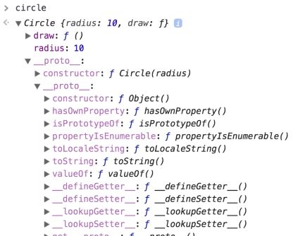
Now, back here, so, this is our circle base, circle base also has a prototype. Let's see what we have here.
What is this object? That's object base, right? The root object in JavaScript. So this is what we have in memory.
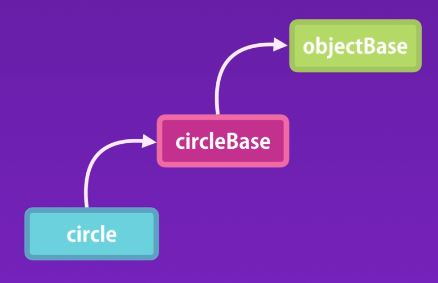
We have the circle object that inherits from circleBase, and circleBase inherits from objectBase.
4. Property Attributes
Earlier in the last section, you learned about object.defineProperty method. We used this to define
a getter and a setter for the property. So, as the first argument we pass person, the second argument is the name of the target property which is name,
and the third argument is an object which is our property descriptor object.
This is where we add the attributes to this property.
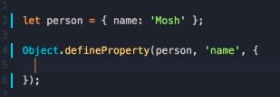
So in the last section we used get and set to define a getter and a setter. Now we are going to use different
set of properties. So I can send this to writable false.
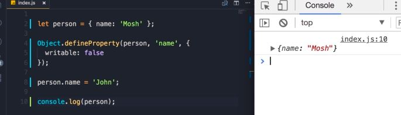
Here the name is not changed, so that's the writable attribute.
We have another attribute, enumerable, we can set this to false, and then this will
not show up in object.keys. So when you log Object.keys, of person, look now we get an empty array.

So let's what happens if we set configurable to false.
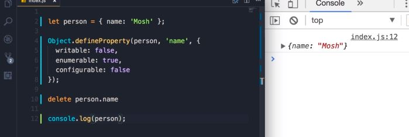
Now we cannot delete this property. So, if I try to delete person.name, nothing will happen. So,
let's log the person on the console, look the name property is still there.